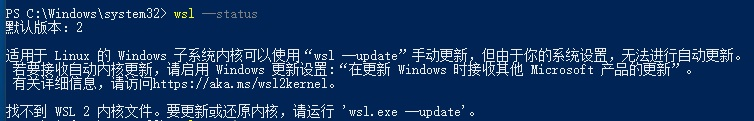

一、自动安装
满足 Win10 系统版本要求的（ Windows 10 版本 2004 及更高版本（内部版本 19041 及更高版本）或 Windows 11）可以使用这种方式
查看方式，Win + R 打开运行窗口，输入 winver 查看
-
wsl --install -
查看可用的 Linux 发行版
wsl -l -o -
查看已安装的 Linux 分发版
wsl -l -v -
注销 Linux 发行版
wsl --unregister Ubuntu -
可以直接从官网下载 Linux 发行版的安装包，然后将 appx 扩展名改为 zip，解压到想要放置的目录，双击 ubuntu.exe 启动，参考手动安装
二、手动安装
- 注意：以下命令都是在以管理员权限运行的 PowerShell 中完成
- 启用 “适用于 Linux 的 Windows 子系统” 可选功能
dism.exe /online /enable-feature /featurename:Microsoft-Windows-Subsystem-Linux /all /norestart - 启用 “虚拟机平台” 可选功能
dism.exe /online /enable-feature /featurename:VirtualMachinePlatform /all /norestart - 重启电脑
- 查看 WSL 状态信息，默认版本等
wsl --status
 - 更新 WSL
wsl --update - 下载 Ubuntu 版本，将扩展名
.appx改为 zip，解压到文件夹，双击ubuntu.exe启动运行